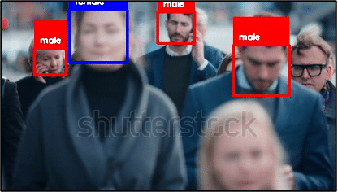

My Projects
Chainlit & Langchain for RAG chatbot
Simple Chainlit app to have interaction with your documents. This Chainlit app only accepts .txt and .pdf file types. This is because a PDF ingestion pipeline has been implemented with PyPDFLoader. You can also add different ingestor pipelines or create your own ones for your preferred files.
Repository ->
Runge-Kutta for Solving ODEs and Systems
In this project, the Runge-Kutta numerical method is explored for solving ordinary differential equations (ODEs) and coupled ODE systems, commonly used in applied mathematics and physics. The method is applied to first-order ODEs, coupled systems, and a simple harmonic oscillator. Finally, it is used to solve two epidemiological models, SIS and SIR, to understand epidemic dynamics and disease spread in a population.
Repository ->
OpenCV Traffic Heatmap
The present project consists of developing a Python program using the OpenCV library to perform real-time video processing. The objective is to apply different real-time image processing techniques to a traffic video file to obtain a heat map of the movement of cars.
Repository ->

Gender Classification OpenCV
This project focuses on developing a facial detection and gender classification program for video processing. Combining OpenCV, Haar cascade classifiers, and machine learning techniques, the program aims to accurately detect faces in videos and classify them as male or female. The motivation behind this project is to bridge the gap between video processing and machine learning applications, creating a versatile classification algorithm for real-world use.
Repository ->
Quantum Neural Networks
Implementation of quantum neural networks as well as hybrid models using the qiskit and pytorch libraries. All three different models (classic, quantum and hybrid) are compared to see which has better performance.
Repository ->
Discrete Verhulst Model in MATLAB
Study of the behavior of a discrete equation which, depending on one of its parameters, its behavior is completely different, being able to switch from a stable state to a totally chaotic one. Additionally, work has been done with the MATLAB tool, thus improving its handling and knowledge about it.
Repository ->
Quantum SVMs
This project focuses on developing a facial detection and gender classification program for video processing. Combining OpenCV, Haar cascade classifiers, and machine learning techniques, the program aims to accurately detect faces in videos and classify them as male or female. The motivation behind this project is to bridge the gap between video processing and machine learning applications, creating a versatile classification algorithm for real-world use.
Repository ->
ABOUT ME
Enrique Ramos
My name is Enrique Ramos, and I am a final year
Mathematical Engineering student at the Universidad
Francisco de Vitoria. I would like to share with you my
strengths, passions, and commitment to learning and
professional growth.
Since I was young, I have had a special attraction to
mathematics. Logic and deductive reasoning have always
captured my interest. My passion for math and the need to
explain and solve everything led me to choose Mathematical
Engineering as my field of study.
During my three years of study, I have gained mathematical
knowledge in areas such as algebra, calculus, statistics,
and analysis. This, combined with specializations in
Machine Learning, Data Mining, and Cryptography, has
provided me with a solid foundation that allows me to
tackle complex problems.
In addition to technical knowledge, I have also developed
problem-solving and analytical thinking skills. In
mathematical engineering, a different approach is required
to break down complicated problems into manageable
components to find the best solution. I have also learned
to analyze and address challenges from different
perspectives.
One aspect that excites me about mathematical engineering
is its practical application in the real world. I am
thrilled about using my knowledge to optimize processes,
improve data-driven decision-making, and find innovative
solutions in various fields.
Lastly, besides my passion for mathematics, I am also a
team-oriented and collaborative person. I believe that
unity and the exchange of ideas are crucial for success in
any work environment. During my three years at university,
we have faced various team projects that required
communication and planning, as well as the ability to
adapt to different working styles. I am confident that the
ability to collaborate in a team is valuable in any
company.
In summary, as a Mathematical Engineering student, I bring
to the table a foundation of theoretical mathematical
knowledge, analytical skills, and a passion for the
practical application of math. I am committed to
continuous learning, teamwork, and creative
problem-solving.